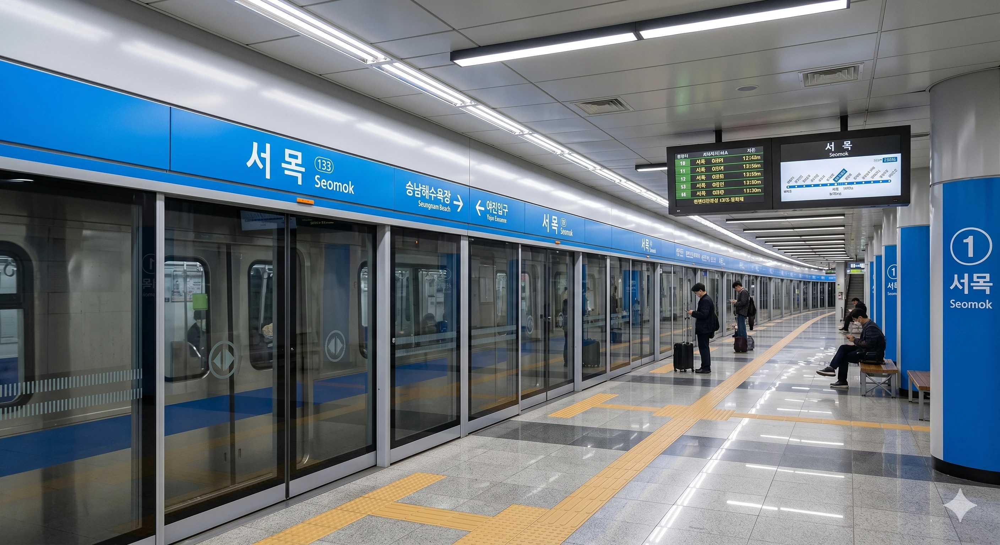

효빈 도시철도 1호선 탄성지선의 113-16번 역이다. 효빈광역시 탄성군 서목읍 서목리 753에 소재한다. 그냥 서쪽에 나무가 많아서 서목이다.
2017년 탄성지선 연장과 함께 개통된 지상 역사다. 서목읍의 울창한 숲과 어우러진 자연 친화적인 입지를 자랑하며, 지상 1층 규모로 설계되어 개방감이 좋다. 탄성군 주민들의 도심 접근성을 크게 개선한 역이기도 하다.[1]
|
1
서목역 출구 정보
|
||
|---|---|---|
| 번호 | 주요 시설 및 방향 | 비고 |
| 1 | 서목고등학교, 성규초등학교 | |
| 2 | 입리초등학교, 삽곡대학교, 서목읍 행정복지센터 | |
연도별 일평균 승하차 인원 통계다. 탄성군 내 학교들의 통학 수요와 토마토 주스를 찾는 성지순례객 덕분에 매년 이용객이 늘어나는 기현상을 보이고 있다.
| 서목역 이용객 통계 | ||
|---|---|---|
| 연도 | 일평균 이용객 | 비고 |
| 2020년 | 3,116명 | |
| 2021년 | 3,426명 | |
| 2022년 | 4,578명 | |
| 2023년 | 4,720명 | |
| 2024년 | 4,929명 | |
※ 2면 3선 섬식 승강장

| 야진입구 ↑ | ||||
| ㅣ | 하행 | ㅣ | 상행 | ㅣ |
| ↓ 승남해수욕장 | ||||
| 상행 | 1 효빈 도시철도 1호선 지선 (완행/급행) | 야진입구 · 탄성군청 · 곽암해수욕장 · 창선 방면 (급행 정차) |
| 하행 | 1 효빈 도시철도 1호선 지선 (완행/급행) | 승남해수욕장 방면 (급행 정차) |
주요 연계 노선: